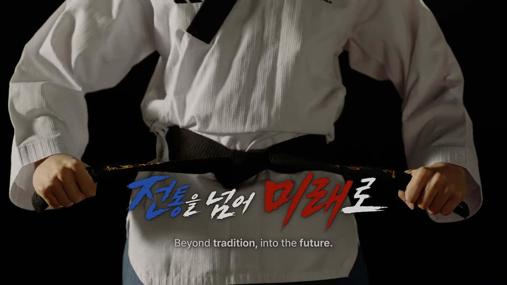
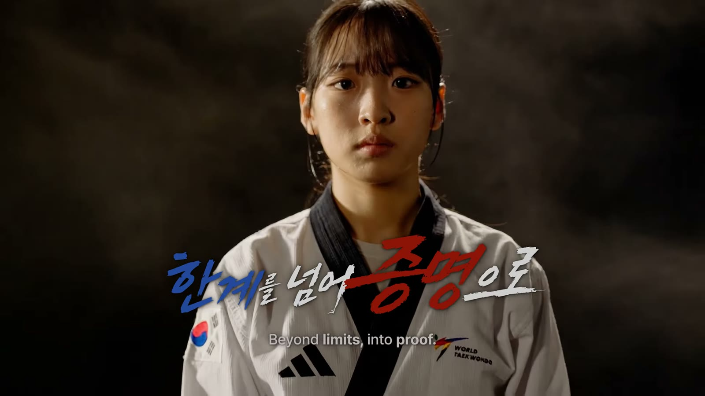
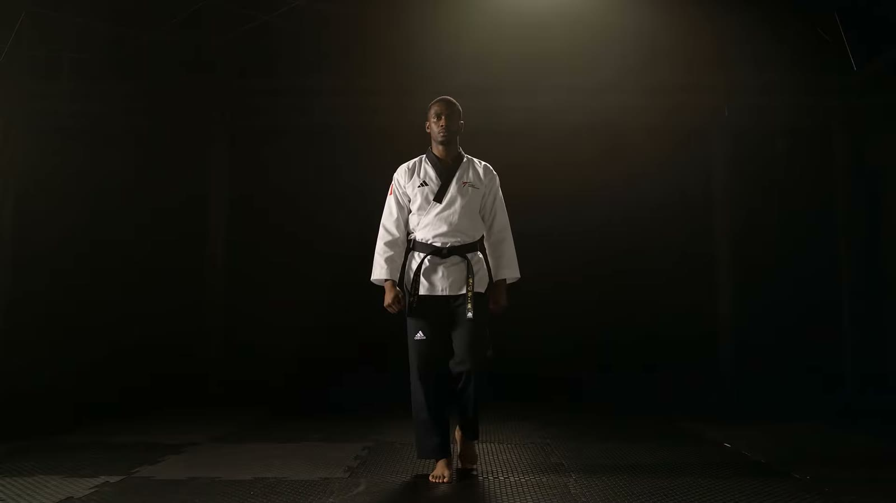
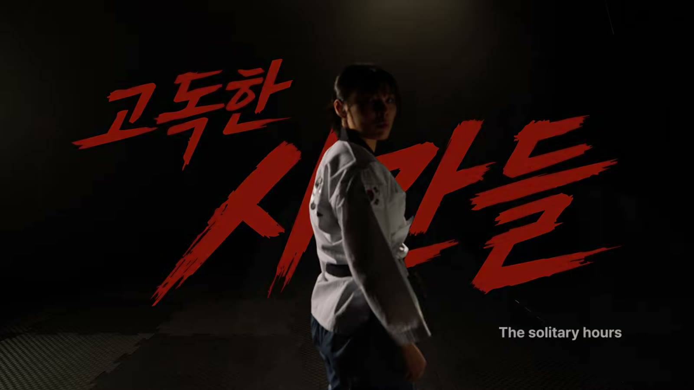
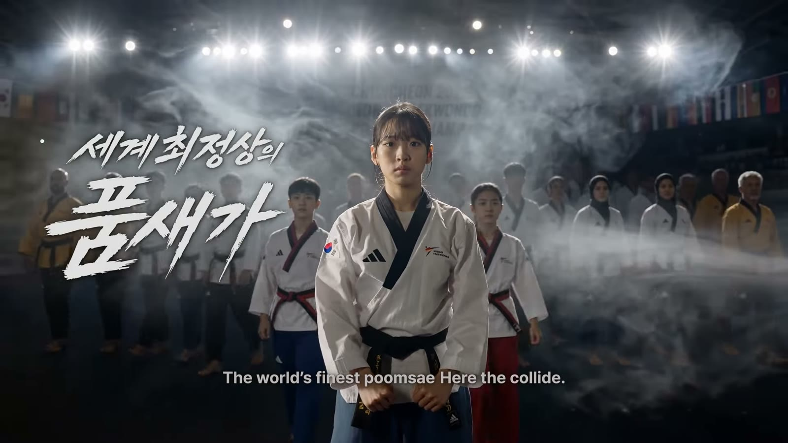
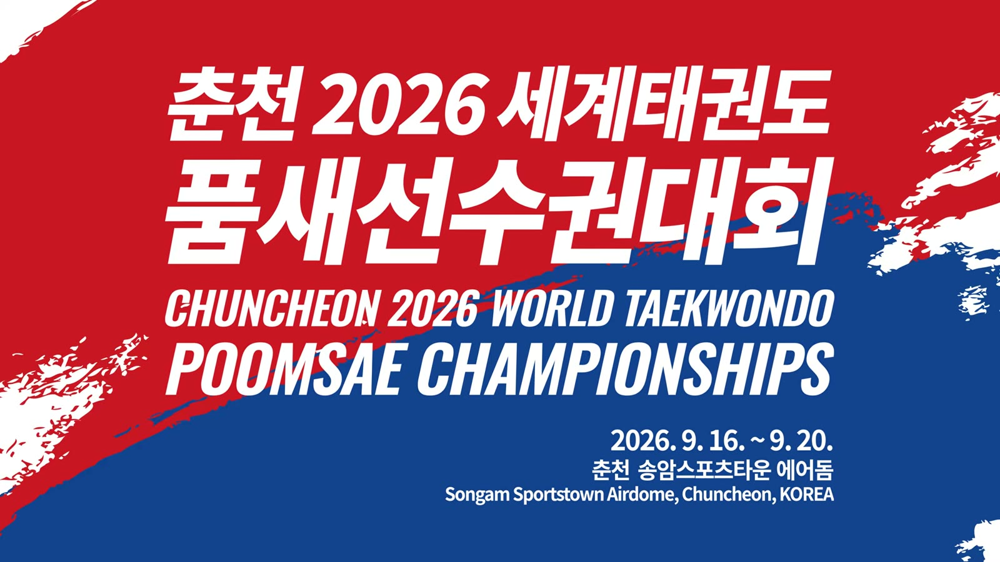

01 — 대회
내년 9월, 세계 각국의 품새 선수들이 춘천에 모입니다. 공인품새와 자유품새, 어린 선수부터 60대 선수까지. 처음 고민은 하나였습니다. 이 대회의 무게를 영상 안에서 어떻게 보여줄 것인가.

본편 중 — 전통을 넘어 미래로
춘천 2026 세계태권도품새선수권대회 홍보영상을 만들었습니다.
춘천 2026 세계태권도품새선수권대회 대회 홍보영상 — 완성본
내년 9월, 세계 각국의 품새 선수들이 춘천에 모입니다. 공인품새와 자유품새, 어린 선수부터 60대 선수까지. 처음 고민은 하나였습니다. 이 대회의 무게를 영상 안에서 어떻게 보여줄 것인가.

답은 선수에게서 찾았습니다. 차예은 선수는 자유품새 세계선수권 2연패에 항저우 아시안게임 금메달, 2024 세계선수권 자유품새 여자부 MVP. 이주영 선수는 유소년·청소년·성인부 세계선수권을 모두 제패한 최초의 선수이자 2024 공인품새 여자부 MVP입니다. 한 명은 자유품새, 한 명은 공인품새. 세계 정상의 두 선수가 화면 중심에 서 있는 것만으로 이 대회가 어떤 무대인지 설명된다고 믿었고, 그래서 두 선수를 직접 섭외했습니다.

촬영 전에 우리부터 품새를 공부했습니다. 공인품새와 자유품새는 무엇이 다른지, 연령대마다 경기와 도복이 어떻게 달라지는지, 선수들은 무엇을 중요하게 여기는지. 그러다 한 단어에 멈췄습니다. 반복. 화면에 담기는 완벽한 동작은 몇 초면 지나가지만, 그 몇 초 뒤에는 같은 자세를 잡고, 다시 차고, 다시 서기를 셀 수 없이 반복한 시간이 있습니다.


그래서 영상은 이 한 문장을 향해 갑니다. 수만 번을 반복해 온 세계의 선수들이 2026년 춘천으로 모인다.
세계 곳곳에서 수련하던 선수들이 춘천 한 곳을 향해 모이는 장면은 실제 촬영만으로 담을 수 없어 AI로 확장했습니다. 대신 티가 나지 않게 만드는 데 공을 들였습니다. AI 특유의 이질감이 흐름을 깨지 않도록 여러 번 다시 만들었고, 실제로 촬영한 선수들의 컷과 자연스럽게 이어질 때까지 다듬었습니다.

좋은 움직임으로 영상의 중심을 만들어 준 차예은 선수, 이주영 선수, 그리고 함께해 주신 모든 분들께 감사드립니다. 촬영하며 남긴 몇 장의 기록과 함께 완성된 영상을 공유합니다.

춘천 2026 세계태권도 품새선수권대회 · 2026. 9. 16. — 9. 20. · 춘천 송암스포츠타운 에어돔
종목과 일정만 알려주시면 촬영 방식부터 제안해 드립니다.